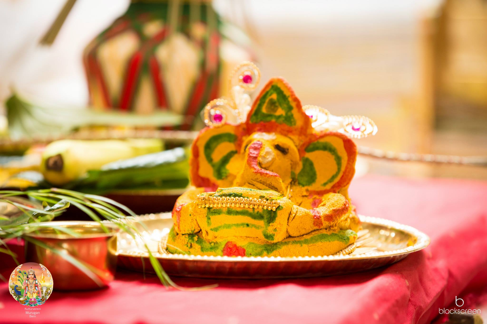

Sri Kalyana Subramaniar Tempel Bern Toffen
Home
NEWS
- Die neue Webseite ist jetzt Online.
besuchen Sie uns auch auf Facebook & Youtube!
Geschichte
 Lord Murugan ist der zweite Sohn von Lord Shiva. Er ist ein Bild von menschlicher Vollkommenheit. Das Tamilisch Wort "Murugan" bedeutet Schönheit und Jugendlichkeit und Murugan ist der Gott mit diesen Aspekten. Subramaniam, Kanthan, Velan, Kadampan, Karthigesan, Kumaran und Saravanan sind die anderen Namen von Murugan. Und jeder Name hat seine eigene besondere Bedeutung. Arumugan ist ein spezieller Name des Lord Murugans. Es bedeutet, die eine mit sechs Seiten. Lord Murugan wird oft auf einem Pfau dargestellt, welches mit einer Schlange gefesselt ist. Er hat seine Begleitungen Valli und Theivanai mit ihm, dem Vel in der Hand hält und hat einen Seval (Cockeral) auf seinem Kampfflagge . Durch die Verehrung Lord Murugan, werden wir mit jnanam (Wissen), Schönheit, Jugendlichkeit und Mut gesegnet.
Lord Murugan ist der zweite Sohn von Lord Shiva. Er ist ein Bild von menschlicher Vollkommenheit. Das Tamilisch Wort "Murugan" bedeutet Schönheit und Jugendlichkeit und Murugan ist der Gott mit diesen Aspekten. Subramaniam, Kanthan, Velan, Kadampan, Karthigesan, Kumaran und Saravanan sind die anderen Namen von Murugan. Und jeder Name hat seine eigene besondere Bedeutung. Arumugan ist ein spezieller Name des Lord Murugans. Es bedeutet, die eine mit sechs Seiten. Lord Murugan wird oft auf einem Pfau dargestellt, welches mit einer Schlange gefesselt ist. Er hat seine Begleitungen Valli und Theivanai mit ihm, dem Vel in der Hand hält und hat einen Seval (Cockeral) auf seinem Kampfflagge . Durch die Verehrung Lord Murugan, werden wir mit jnanam (Wissen), Schönheit, Jugendlichkeit und Mut gesegnet.
Ursprung
Genau ist der Ursprung nicht bekannt, es gibt weder einen offiziellen Gründer noch ein nachweisbares Gründungsdatum. Spuren des Hinduismus gehen aber mehrere tausend Jahre zurück. Für die Hindus ist ihr Glaube jedoch "sanatana-dharrna", das heisst „ewige Religion".
Theologie
Sie umfasst praktisch alle Ausdrucksarten der verschiedenen Glaubensformen: die Verehrung von Naturgottheiten (Pantheismus), den Vielgötterglauben (Polytheismus), die unteilbare Einheit der gesamten Schöpfung und aller Lebewesen (Monismus) sowie den Glauben an einen Gott, der über alles herrscht (Monotheismus).
Philosophie
 Für die Hindus verläuft die Zeit zyklisch, das heisst sie hat weder einen Anfang noch ein Ende. Sie ist, wie die Jahreszeiten, ein ewiger Kreislauf von verschiedenen Zeitaltern (yugas). Die Seele ist unsterblich und wandert gemäss ihren Handlungen (Karma) durch verschiedene Lebensformen. Den als "Reinkarnation bekannten Begriff nennen die Hindus samsara, Kreislauf von Geburt und Tod. Ihr Ziel ist es, aus diesem Kreislauf durch gottesbewusstes oder spirituelles Handeln frei zu werden (moksha), um je nach Glaubensrichtung die Ewigkeit (nirvana) oder das Reich Gottes zu erreichen.
Für die Hindus verläuft die Zeit zyklisch, das heisst sie hat weder einen Anfang noch ein Ende. Sie ist, wie die Jahreszeiten, ein ewiger Kreislauf von verschiedenen Zeitaltern (yugas). Die Seele ist unsterblich und wandert gemäss ihren Handlungen (Karma) durch verschiedene Lebensformen. Den als "Reinkarnation bekannten Begriff nennen die Hindus samsara, Kreislauf von Geburt und Tod. Ihr Ziel ist es, aus diesem Kreislauf durch gottesbewusstes oder spirituelles Handeln frei zu werden (moksha), um je nach Glaubensrichtung die Ewigkeit (nirvana) oder das Reich Gottes zu erreichen.
Gottheiten
Ähnlich wie im vorchristlichen Europa die Natur und der gesamte Kosmos von verschiedenen Gottheiten durchdrungen waren, kennt der Hinduismus eine beinahe unbegrenzte Anzahl Gottheiten, genannt devas. Es sind dies universale Herrscher, die für alle Aspekte des Lebens zuständig sind: Fruchtbarkeit, Gesundheit, Reichtum, Macht, Tod usw. Sie beherrschen auch alle Elemente wie Erde, Wasser, Feuer, Luft und Raum.
Zu den mächtigsten gehören Shiva, der unter anderem für die Auflösung des Kosmos am Ende der Zeit zuständig ist, Brahma, der Schöpfer der materiellen Welt, und Vishnu als Erhalter des Universums. Sehr beliebt ist der elefantenköpfige Ganesha, der angebetet wird, um die Hindernisse im Leben zu entfernen. Lakshmi, die Glücksgöttin, erhält Huldigung von jenen, die Reichtum und Wohlergehen wünschen. Am populärsten ist Krishna. Seine bezaubernde Lieblichkeit wird in vielen Hymnen besungen und sein philosophischer Dialog in der Bhagavad-gita gilt als bekannteste Schrift des Hinduismus. Besonders zu erwähnen sind auch die avataras, Erscheinungen einzelner Gottheiten auf der Erde. Zahlreiche Texte beschreiben die dasha-avataras, die zehn „Inkarnationen" Vishnus.

Schriften
Fast so zahlreich wie die Gottheiten sind die Schriften der Hindus. Zu den ältesten gehören vor allem die auf rituelle Beschreibungen ausgerichteten vier Grundtexte, die Veden. Dazu gibt es über hundert Upanishaden, die philosophische Dialoge enthalten. Bekannt sind auch die zahlreichen Puranas. Sie beschreiben die Theologie und Philosophie in Form von Geschichten. Sehr populär sind die beiden epischen Werke (poetische Heldengeschichten) Ramayana und Mahabharata, zu dem auch die Bhagavad-gita gehört, welche die indische Gotteslehre zusammenfasst.
Hindu-Gesellschaft
Ein wichtiges Bindeglied sind die sarnskaras, religiöse Zeremonien, die vor der Zeugung beginnen und bis nach dem Ableben durch Familienmitglieder durchgeführt werden. Sie sollen die entsprechende Seele läutern und sie mit den Segnungen einer bestimmten Gottheit begleiten.
Tempel
Auffallend in Indien sind die vielen Tempel - von kleinen Weihestätten an einer Strassenecke oder in einer Wohnung bis zu imposanten, riesigen Kunstwerken aus Granit und Marmor. Das Heiligste sind die geweihten Statuen jener Gottheiten, Murti oder archavigraha genannt, die sich im Innern des Tempels befinden. Sie werden erst verehrt, wenn sie durch eine traditionelle Einweihungszeremonie (prang-pratishta) mit der göttlichen Kraft und Gnade „belebt" wurden. Fromme Hindus besuchen „ihren" Tempel täglich, mindestens aber einmal pro Woche.
Verbreitung
Es gibt auf der ganzen Welt ungefähr eine Milliarde Hindus. Etwa siebzig Prozent der Bevölkerung Indiens gehören dieser Religion an. Daneben gibt es einige Länder, in denen ein ansehnlicher Teil der Bewohner Hindus sind: Nepal, Indonesien (Bali), Mauritius, die Fiji-Inseln, Sri Lanka (Tamilen). Nicht nur Hindus, die in alle Kontinente auswanderten, sondern auch eine kleine Anzahl westlicher Menschen praktizieren Aspekte des Hinduismus.
Fazit
Wie alle Religionen ist auch der Hinduismus eine Glaubenslehre, die sich über das materielle irdische Leben hinaus erhebt. Er gibt den Menschen Selbstverantwortung, leitet sie aber auch durch Rituale, heilige Schriften, Priester und religiöse Feste dazu an, alle Lebewesen, Natur und Kosmos als eine von Gott geschaffene natürliche Einheit zu verstehen. Im Hinduismus gilt es, diese Harmonie zu erkennen und sie im Alltag zu integrieren. Religion, die Verbindung zu Gott, ist für einen Hindu immer und überall erfahrbar.